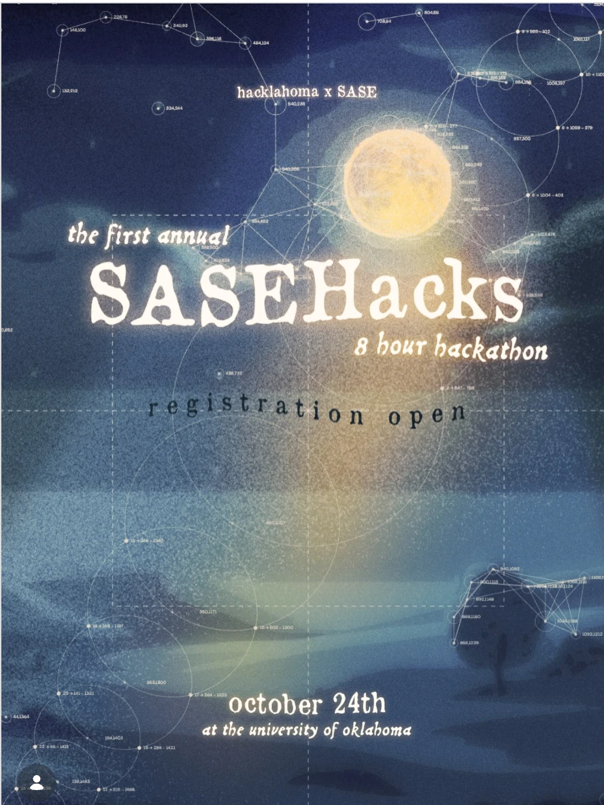
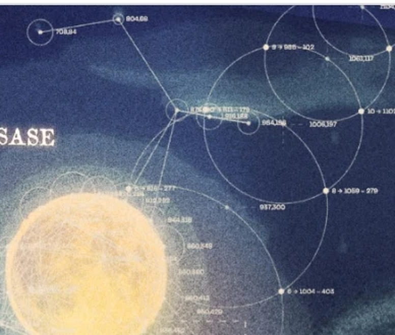
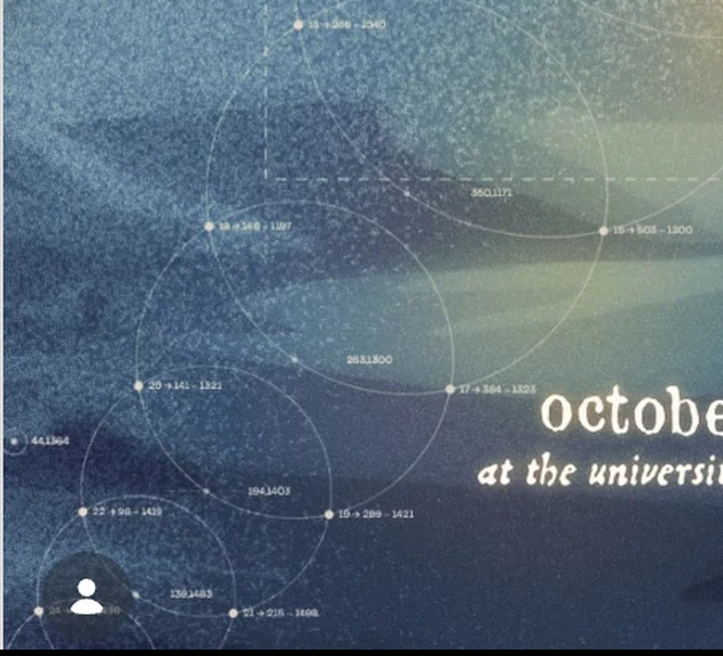

Hacklahoma 2027 · Where Worlds Meet · Asset study 04
The Sky Above the Water
Constellations over the water, in the plotted style of the SASEHacks graphic and the quiet rings of the Figma. They aren't random: each one traces something that belongs to Hacklahoma. They draw themselves on, the stars twinkle, and the water reflects them.
Decisions for this round
What we're choosing between
Switch between them in the live scene below. My recommendation is marked.
1 · Sky style
Blend: our constellations, a light plotted path, quiet rings
Plotted: SASEHacks-style numbered path and circles
Chart: Figma-style rings only, very quiet
Shapes: our four constellations only
2 · Labels
Coordinates (3 → 524 – 224), as in SASEHacks
Figma counters (05 / 92)
No labels
3 · Draw-on
Once, as the page loads
Always fully drawn
4 · Paint filter
Off: the sky stays crisp, the painted figure carries the painterly feel
On: softer water, but it wipes out the hairlines
01 · The scene
Stars over the fleet
Choose a style; Replay draws it on again. The sky sits far out over the water, so it reflects, and its labels are the real positions of each point.
move the pointer: the camera drifts
02 · The constellations
Four shapes that mean something
Scattered around the edges of the sky, so the middle stays clear for the headline.
03 · Reference teardown
What we took from SASEHacks and the Figma
The language, not the layout: their moon, hills and type stay theirs.

SASEHacks posterThe director's reference.

Circles through pointsEach big circle passes exactly through three stars: a circumcircle, the kind of thing geometry code draws.

Numbered pointsLabels like 20 → 141 – 1321: a point's number, then where it is. It reads like a program plotting.
Thin, cool lines. Hairline strokes in pale blue-white, never bright. The stars carry the light.
Dashed guides. A few long dashed lines, like crop marks or a plotting frame.
The Figma is quieter. Two faint concentric rings, a few dots and a tiny 05 / 92 counter (see the rings in the Chart style).
Text stays clear. In both, the busiest lines sit away from the headline.